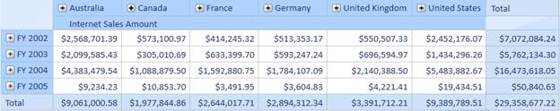
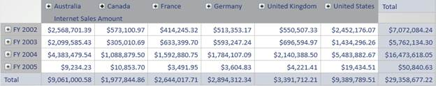
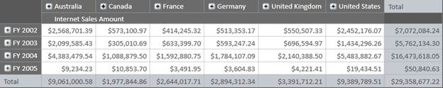
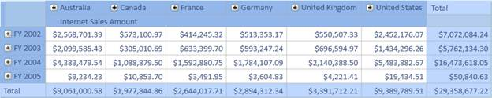
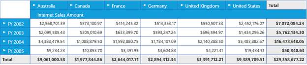

Different themes can be applied to OlapGrid using Syncfusion.Shared.Wpf assembly, which contains the basic data structures for applying a theme.
The following code snippet describes about applying theme to Grid.
|
[XAML]
<!—Shared WPF namespace should be included--> xmlns : sfshared ="clr-namespace:Syncfusion.Windows.Shared;assembly=Syncfusion.Shared.WPF"
<
ResourceDictionary
>
<!-- Applying theme to OlapGrid--> < syncfusion : OlapGrid Name ="OlapGrid1" sfshared : SkinStorage.VisualStyle ="Blend" />
|
-Or-
|
[C#]
// Shared WPF namespace using Syncfusion.Windows.Shared;
// For applying blend theme SkinStorage.SetVisualStyle(this.OlapGrid1, "Blend");
|
|
[VB]
' Shared WPF namespace Imports Syncfusion.Windows.Shared
' For applying blend theme SkinStorage.SetVisualStyle(Me.OlapGrid1, "Blend")
|

Figure 32: OlapGrid in Blue Theme

Figure 33: OlapGrid in Silver Theme

Figure 34: OlapGrid in Blend Theme

Figure 35: OlapGrid in Office 2007 Theme

Figure 35: Metro Theme